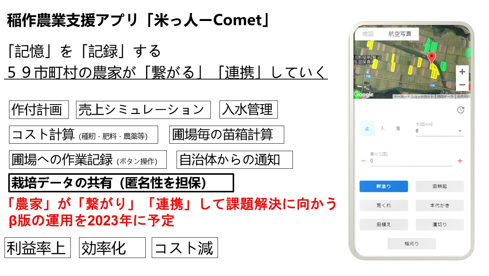

澄んだ水と
大地の恵みが育んだ
自慢のお米を
お届けします。

毎日の「おいしい」のために。
田んぼを管理し、安心安全で
美味しいお米を育てています。
何千年も続く米作りの歴史を未来に繋ぐ。
今日もこの土地でお米を育てます。

和田農園の取り組み
-
- 空飛ぶライスマンプロジェクト
- ドローンを活用し、農業をより効率のよいものに変えていきます。水田全体の画像を空撮、日照時間・温度など育成に必要なデータを活用することでドローンが肥料や農薬を自動で散布します。重労働の解消や、コスト削減を目指します。
-
- コメット
- 米農家が開発する稲作支援アプリ。肥料の管理を複数の管理者で共有したり、収穫量のシミュレーション機能で農家の収益向上をアシストします。自治体との各種連携機能も行え、農業をスマートに変えます。2022年現在は実証実験を計画中です。
- 
-
- ふくすび
- 和田農園は福島全59市町村の米農家のお米を宇宙に打ち上げる「ふくすび」プロジェクトの発起人。福島の米農家から明るい話題をお届けするためのチャレンジです。被災を乗り越え復興を続ける福島の絆を象徴するプロジェクトです。